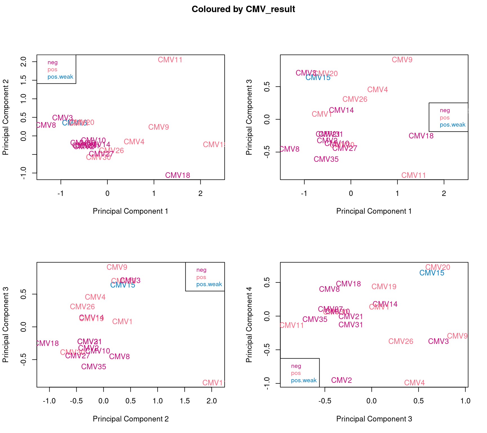
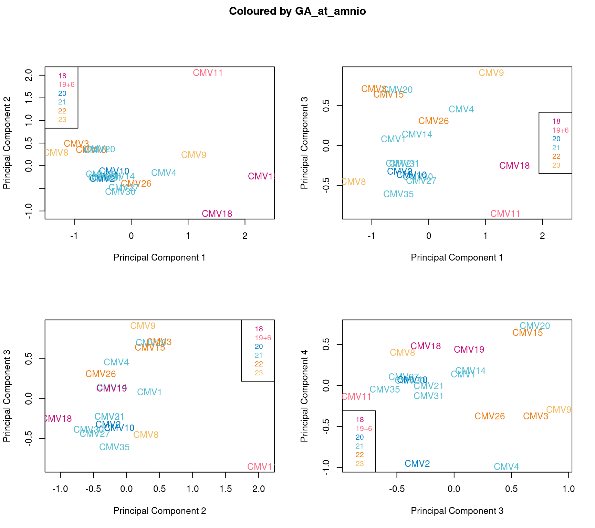
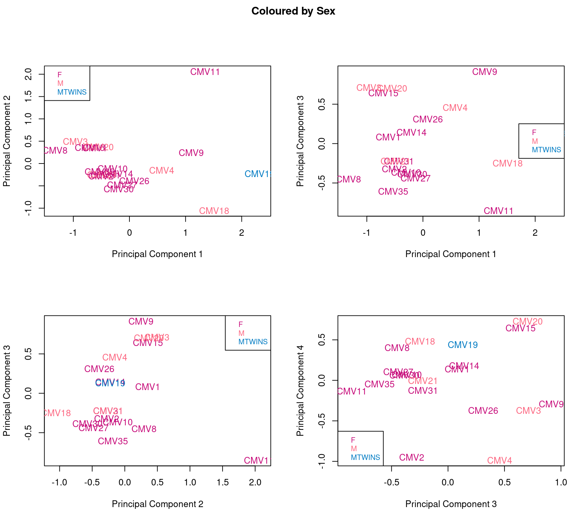
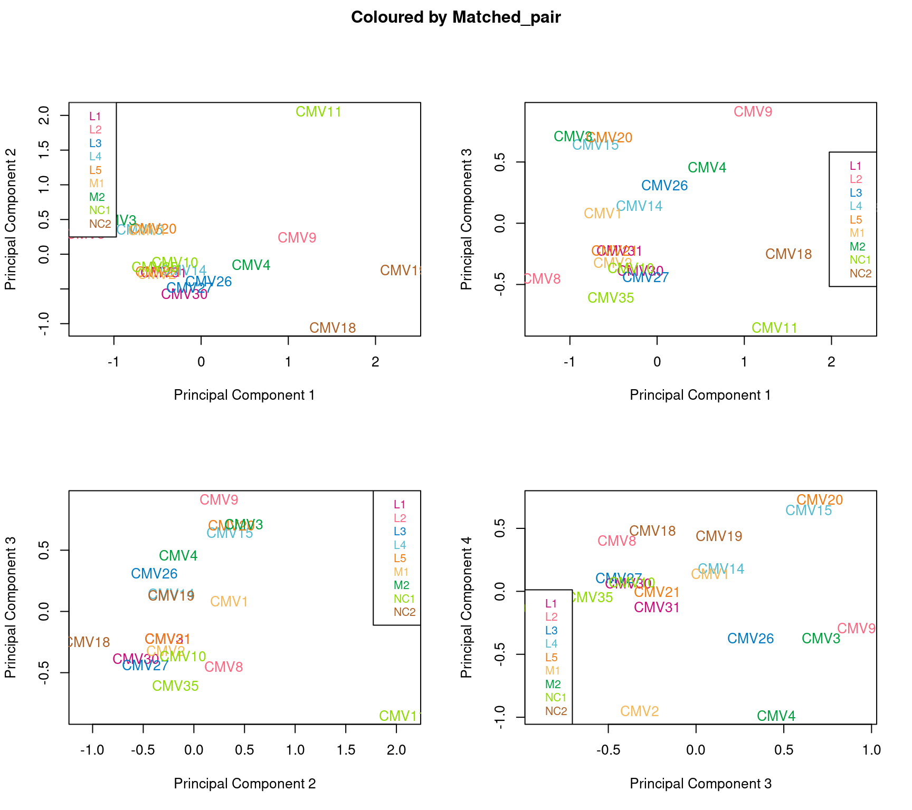
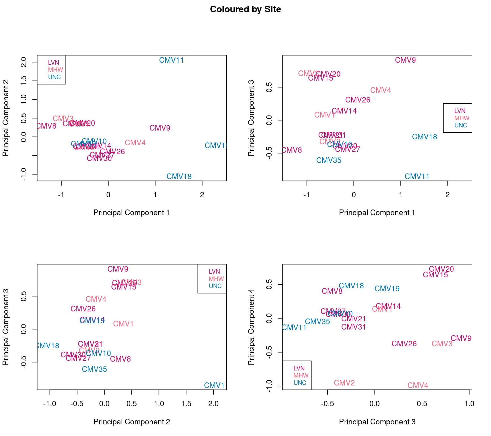
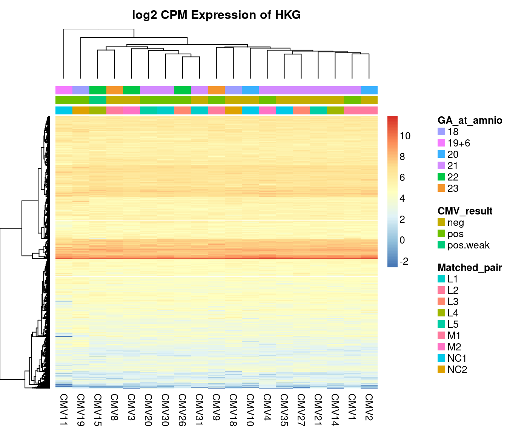
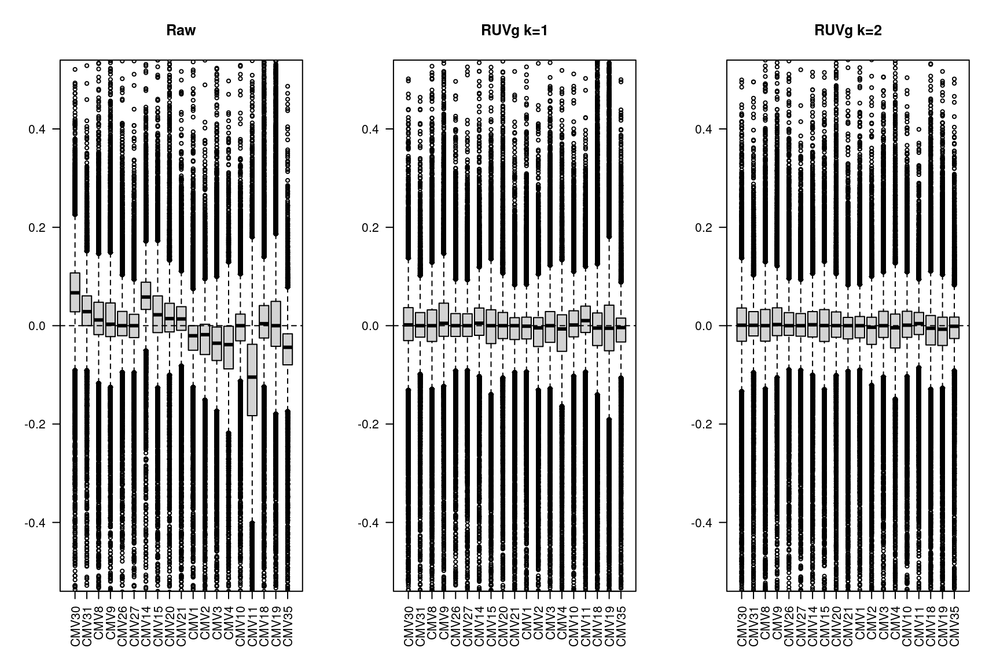
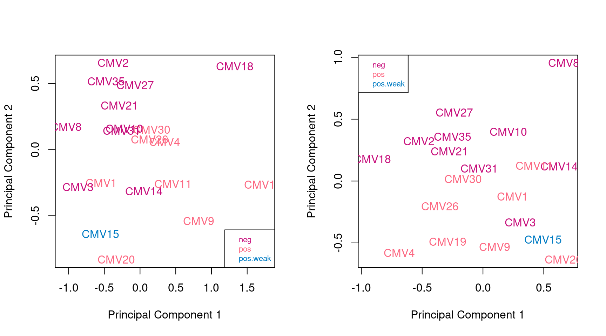
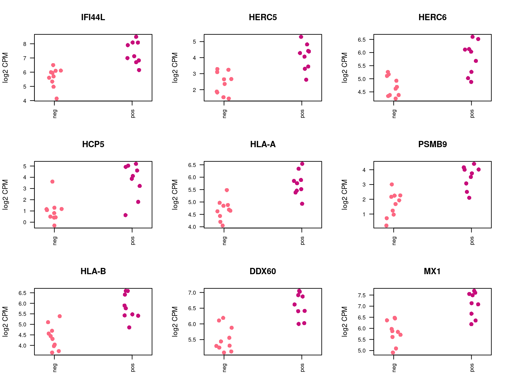

Last updated: 2021-09-25
Checks: 7 0
Knit directory: amnio-cell-free-RNA/
This reproducible R Markdown analysis was created with workflowr (version 1.6.2). The Checks tab describes the reproducibility checks that were applied when the results were created. The Past versions tab lists the development history.
Great! Since the R Markdown file has been committed to the Git repository, you know the exact version of the code that produced these results.
Great job! The global environment was empty. Objects defined in the global environment can affect the analysis in your R Markdown file in unknown ways. For reproduciblity it’s best to always run the code in an empty environment.
The command set.seed(20200224) was run prior to running the code in the R Markdown file. Setting a seed ensures that any results that rely on randomness, e.g. subsampling or permutations, are reproducible.
Great job! Recording the operating system, R version, and package versions is critical for reproducibility.
Nice! There were no cached chunks for this analysis, so you can be confident that you successfully produced the results during this run.
Great job! Using relative paths to the files within your workflowr project makes it easier to run your code on other machines.
Great! You are using Git for version control. Tracking code development and connecting the code version to the results is critical for reproducibility.
The results in this page were generated with repository version e20c62d. See the Past versions tab to see a history of the changes made to the R Markdown and HTML files.
Note that you need to be careful to ensure that all relevant files for the analysis have been committed to Git prior to generating the results (you can use wflow_publish or wflow_git_commit). workflowr only checks the R Markdown file, but you know if there are other scripts or data files that it depends on. Below is the status of the Git repository when the results were generated:
Ignored files:
Ignored: .Rhistory
Ignored: .Rproj.user/
Ignored: .bpipe/
Ignored: analysis/obsolete_analysis/
Ignored: analysis/salmon-ruvseq-edger.nb.html
Ignored: code/.bpipe/
Ignored: code/.rnaseq-test.groovy.swp
Ignored: code/obsolete_analysis/
Ignored: data/.bpipe/
Ignored: data/190717_A00692_0021_AHLLHFDSXX/
Ignored: data/190729_A00692_0022_AHLLHFDSXX/
Ignored: data/190802_A00692_0023_AHLLHFDSXX/
Ignored: data/200612_A00692_0107_AHN3YCDMXX.tar
Ignored: data/200612_A00692_0107_AHN3YCDMXX/
Ignored: data/200626_A00692_0111_AHNJH7DMXX.tar
Ignored: data/200626_A00692_0111_AHNJH7DMXX/
Ignored: data/CMV-AF-database-corrected-oct-2020.csv
Ignored: data/CMV-AF-database-final-included-samples.csv
Ignored: data/GONE4.10.13.txt
Ignored: data/HK_exons.csv
Ignored: data/HK_exons.txt
Ignored: data/HK_genes.txt
Ignored: data/IPA molecule summary.xls
Ignored: data/IPA-molecule-summary.csv
Ignored: data/brain-development-geneset.txt
Ignored: data/deduped_rRNA_coverage.txt
Ignored: data/gene-transcriptome-analysis/
Ignored: data/hg38_rRNA.bed
Ignored: data/hg38_rRNA.saf
Ignored: data/ignore-overlap-mapping/
Ignored: data/ignore/
Ignored: data/joindata.csv
Ignored: data/metadata.csv
Ignored: data/rds/
Ignored: data/salmon-pilot-analysis/
Ignored: data/samples.csv
Ignored: data/star-genome-analysis/
Ignored: output/c2Ens.RData
Ignored: output/c5Ens.RData
Ignored: output/hEns.RData
Ignored: output/keggEns.RData
Untracked files:
Untracked: analysis/STAR-DEXSeq-exclude-US-ab.Rmd
Untracked: code/output.R
Untracked: code/rnaseq.salmon-quant.groovy
Untracked: code/rnaseq.star.count-exons.groovy
Untracked: code/rnaseq.star.groovy
Untracked: output/salmon-limma-voom-GO-exclude-CMV11.csv
Untracked: output/salmon-limma-voom-c2Cam-exclude-CMV11.csv
Untracked: output/salmon-limma-voom-c5Cam-exclude-CMV11.csv
Untracked: output/salmon-limma-voom-c5Cam.csv
Untracked: output/salmon-limma-voom-exclude-CMV11.csv
Untracked: output/salmon-limma-voom-hCam-exclude-CMV11.csv
Untracked: output/salmon-limma-voom-keggCam-exclude-CMV11.csv
Untracked: output/salmon-limma-voom.csv
Untracked: output/salmon-ruvseq-edger.csv
Untracked: output/star-fc-ruv-all-gsea-c2.csv
Untracked: output/star-fc-ruv-all-gsea-c5.csv
Untracked: output/star-fc-ruv-all.csv
Untracked: output/star-fc-ruv-no_us_ab-gsea-c2.csv
Untracked: output/star-fc-ruv-no_us_ab-gsea-c5.csv
Untracked: output/star-fc-ruv-no_us_ab.csv
Untracked: renv.lock
Unstaged changes:
Modified: .gitignore
Deleted: analysis/STAR-DEXSeq-Summed.Rmd
Deleted: analysis/salmon-BANDITS.Rmd
Deleted: analysis/salmon-DRIMseq.Rmd
Deleted: analysis/salmon-RUV-all.Rmd
Deleted: analysis/salmon-SatuRn.Rmd
Deleted: code/rnaseq-with-salmon-quant.groovy
Deleted: code/rnaseq.groovy
Deleted: code/salmon-quant-trimmed.groovy
Deleted: code/unmapped-pipe.groovy
Note that any generated files, e.g. HTML, png, CSS, etc., are not included in this status report because it is ok for generated content to have uncommitted changes.
These are the previous versions of the repository in which changes were made to the R Markdown (analysis/salmon-ruvseq-edger.Rmd) and HTML (docs/salmon-ruvseq-edger.html) files. If you’ve configured a remote Git repository (see ?wflow_git_remote), click on the hyperlinks in the table below to view the files as they were in that past version.
| File | Version | Author | Date | Message |
|---|---|---|---|---|
| Rmd | e20c62d | Jovana Maksimovic | 2021-09-25 | wflow_publish(c(“analysis/index.Rmd”, “analysis/salmon-limma-voom.Rmd”, |
| Rmd | 2b6479a | Jovana Maksimovic | 2021-07-26 | Move/remove olds files. |
| Rmd | 5a293f8 | Jovana Maksimovic | 2020-11-09 | Old analyses. |
library(tximport)
library(here)
library(tidyverse)
library(paletteer)
library(TxDb.Hsapiens.UCSC.hg38.knownGene)
library(EnsDb.Hsapiens.v86)
library(readr)
library(limma)
library(edgeR)
library(NMF)
library(EDASeq)
library(RUVSeq)
source(here("code/output.R"))As with the limma-voom analysis, the data was quasi-mapped and quantified using Salmon (v0.14.1) with the GENCODE (v31) human (hg38) transcriptome and decoy sequences. The mapping statistics can be found here. There appeared to be an issue with adapter contamination, with all samples having relatively low mapping percentages.
Load sample information and file names.
samples <- read.csv(here("data/samples.csv"), stringsAsFactors = FALSE, header = TRUE)
files <- list.files(here("data/salmon-pilot-analysis/190717_A00692_0021_AHLLHFDSXX/new_salmon/quants"),
recursive = TRUE, pattern = "quant.sf", full.names = TRUE)
names(files) <- strsplit2(files, "_")[,10]
files <- files[names(files) %in% samples$SampleId]
samples <- samples[match(names(files), samples$SampleId),]
all(file.exists(files))[1] TRUEmetadat <- read.csv(file = here("data/metadata.csv"), header = TRUE,
stringsAsFactors = FALSE)
joindat <- read.csv(file = here("data/joindata.csv"), header = TRUE,
stringsAsFactors = FALSE)
metadat %>% inner_join(joindat, by = c("Record.ID" = "UR")) %>%
inner_join(samples, by = c("ID.post.extraction" = "SampleId")) -> a
metadat %>% inner_join(joindat, by = c("Tube.ID" = "UR")) %>%
inner_join(samples, by = c("ID.post.extraction" = "SampleId")) -> b
alldat <- bind_rows(a,b)
alldat %>% inner_join(samples, by = c("ID.post.extraction" = "SampleId")) -> targets
targets <- targets[match(samples$SampleId, targets$ID.post.extraction),]
targets$Sex <- toupper(targets$Sex)Associate transcripts with gene IDs for gene-level summarization.
edb <- EnsDb.Hsapiens.v86
tx2gene <- transcripts(edb, columns = c("tx_id", "gene_id"), return.type = "DataFrame")Import gene-level counts and abundances.
txiG <- tximport(files, type = "salmon", tx2gene = tx2gene, ignoreTxVersion = TRUE)reading in files with read_tsv1 2 3 4 5 6 7 8 9 10 11 12 13 14 15 16 17 18 19
transcripts missing from tx2gene: 29910
summarizing abundance
summarizing counts
summarizing lengthhead(txiG$counts) CMV30 CMV31 CMV8 CMV9 CMV26 CMV27 CMV14 CMV15
ENSG00000000003 429 254.000 250.001 298.000 241.999 240 441.999 204.000
ENSG00000000005 0 0.000 5.000 0.000 1.000 0 6.000 1.000
ENSG00000000419 98 128.999 101.000 104.000 118.000 100 211.000 190.000
ENSG00000000457 794 515.000 367.001 321.999 501.000 405 523.000 419.006
ENSG00000000460 194 145.000 157.999 94.001 101.001 82 98.001 119.000
ENSG00000000938 20 10.000 4.000 2.000 2.000 0 10.000 3.000
CMV20 CMV21 CMV1 CMV2 CMV3 CMV4 CMV10 CMV11
ENSG00000000003 240.001 240.000 200.000 242 177.000 178.000 162.001 60.000
ENSG00000000005 0.000 0.000 0.000 0 0.000 0.000 0.000 0.000
ENSG00000000419 112.000 123.999 100.000 123 82.000 65.000 132.000 15.000
ENSG00000000457 504.999 355.000 319.001 300 251.999 237.001 280.000 159.999
ENSG00000000460 139.999 134.000 91.000 69 32.001 55.001 87.000 24.999
ENSG00000000938 69.000 4.000 7.000 0 17.000 7.000 7.000 0.000
CMV18 CMV19 CMV35
ENSG00000000003 475.000 439.999 178.000
ENSG00000000005 0.000 2.000 0.000
ENSG00000000419 138.000 124.000 78.999
ENSG00000000457 477.999 331.999 282.789
ENSG00000000460 87.000 92.000 55.000
ENSG00000000938 6.000 0.000 11.000Calculate offsets.
ctsG <- txiG$counts
normMat <- txiG$length
normMat <- normMat / exp(rowMeans(log(normMat)))
o <- log(calcNormFactors(ctsG/normMat)) + log(colSums(ctsG/normMat))
z <- DGEList(ctsG)
z <- scaleOffset(z, t(t(log(normMat)) + o))Filter out lowly expressed genes as with the limma-voom analysis.
z$genes <- ensembldb::genes(edb, filter = GeneIdFilter(rownames(z)),
columns = c("gene_id", "symbol", "entrezid"), return.type = "DataFrame")
z$genes$entrezid <- sapply(z$genes$entrezid, function(x) x[1])
z$genes$length <- rowMedians(txiG$length)
z$group <- ifelse(targets$TestResult.x == "neg","neg","pos")
keep <- filterByExpr(z, group = z$group)
y <- z[keep,]
yAn object of class "DGEList"
$counts
CMV30 CMV31 CMV8 CMV9 CMV26 CMV27 CMV14 CMV15
ENSG00000000003 429.000 254.000 250.001 298.000 241.999 240.000 441.999 204.000
ENSG00000000419 98.000 128.999 101.000 104.000 118.000 100.000 211.000 190.000
ENSG00000000457 794.000 515.000 367.001 321.999 501.000 405.000 523.000 419.006
ENSG00000000460 194.000 145.000 157.999 94.001 101.001 82.000 98.001 119.000
ENSG00000000971 96.402 136.928 171.252 171.891 96.000 92.854 180.180 289.659
CMV20 CMV21 CMV1 CMV2 CMV3 CMV4 CMV10 CMV11
ENSG00000000003 240.001 240.000 200.000 242.000 177.000 178.000 162.001 60.000
ENSG00000000419 112.000 123.999 100.000 123.000 82.000 65.000 132.000 15.000
ENSG00000000457 504.999 355.000 319.001 300.000 251.999 237.001 280.000 159.999
ENSG00000000460 139.999 134.000 91.000 69.000 32.001 55.001 87.000 24.999
ENSG00000000971 165.633 122.309 141.339 87.812 38.622 38.448 97.371 45.159
CMV18 CMV19 CMV35
ENSG00000000003 475.000 439.999 178.000
ENSG00000000419 138.000 124.000 78.999
ENSG00000000457 477.999 331.999 282.789
ENSG00000000460 87.000 92.000 55.000
ENSG00000000971 47.101 99.917 85.000
14515 more rows ...
$samples
group lib.size norm.factors
CMV30 1 12910571 1
CMV31 1 9882210 1
CMV8 1 10018352 1
CMV9 1 9653680 1
CMV26 1 8468332 1
14 more rows ...
$offset
CMV30 CMV31 CMV8 CMV9 CMV26 CMV27 CMV14
ENSG00000000003 16.54255 16.31769 15.92721 15.91117 16.10563 16.03860 16.34990
ENSG00000000419 16.49606 16.25633 15.94499 16.01463 15.97453 15.88564 16.41351
ENSG00000000457 16.29771 16.26280 16.10471 16.07727 16.19070 15.90347 16.35894
ENSG00000000460 16.81878 16.14598 16.50044 15.73052 15.60297 16.04805 16.44529
ENSG00000000971 16.64286 15.87519 16.25381 16.15640 15.86910 15.80674 16.57824
CMV15 CMV20 CMV21 CMV1 CMV2 CMV3 CMV4
ENSG00000000003 16.14024 16.08695 16.10387 15.95037 15.94678 15.86041 15.79804
ENSG00000000419 16.32179 16.15972 16.06037 15.85693 15.87109 15.76417 15.87444
ENSG00000000457 16.25268 16.09932 16.09221 16.02304 15.91295 15.73141 15.87941
ENSG00000000460 16.08153 15.85915 16.39924 16.26697 15.20041 16.36663 15.61240
ENSG00000000971 16.28544 16.17539 16.19212 15.84957 16.06087 15.95119 15.79255
CMV10 CMV11 CMV18 CMV19 CMV35
ENSG00000000003 15.89272 15.47791 16.05097 16.12641 15.83450
ENSG00000000419 16.05337 15.53544 16.18104 16.08051 15.71735
ENSG00000000457 16.12283 15.43731 15.98304 16.07545 15.65665
ENSG00000000460 16.56215 15.03883 16.38465 15.81182 15.58610
ENSG00000000971 15.85268 15.02966 15.96116 16.30960 15.81935
14515 more rows ...
$genes
DataFrame with 14520 rows and 4 columns
gene_id symbol entrezid length
<character> <character> <integer> <numeric>
1 ENSG00000000003 TSPAN6 7105 1689.644
2 ENSG00000000419 DPM1 8813 807.898
3 ENSG00000000457 SCYL3 57147 3432.378
4 ENSG00000000460 C1orf112 55732 1817.522
5 ENSG00000000971 CFH 3075 3873.128
... ... ... ... ...
14516 ENSG00000283512 CTD-2547E10.6 NA 298.158
14517 ENSG00000283553 AL161905.1 8464 346.939
14518 ENSG00000283617 AC074141.1 84765 1894.318
14519 ENSG00000283620 ZNF48 197407 3021.887
14520 ENSG00000283633 AC005301.9 NA 1419.873
$group
[1] "pos" "neg" "neg" "pos" "pos" "neg" "neg" "pos" "pos" "neg" "pos" "neg"
[13] "neg" "pos" "neg" "pos" "neg" "pos" "neg"The MDS plots are the same as for the limma-voom analysis.
pal <- paletteer_d("LaCroixColoR::paired", 14)
colourBy <- c("CMV_result" = "TestResult.x","GA_at_amnio" = "GA.at.amnio","Sex" = "Sex",
"Matched_pair" = "matchedpair", "Site" = "Site.y")
lcpm <- cpm(y, log = TRUE)
for(i in 1:length(colourBy)){
par(mfrow=c(2,2), oma = c(0,0,2,0))
plotMDS(lcpm, gene.selection = "common",
col = pal[factor(targets[,colourBy[i]])])
legend("topleft", legend = levels(factor(targets[,colourBy[i]])), text.col = pal,
cex = 0.8)
plotMDS(lcpm, gene.selection = "common",
col = pal[factor(targets[,colourBy[i]])], dim.plot = c(1,3))
legend("right", legend = levels(factor(targets[,colourBy[i]])), text.col = pal,
cex = 0.8)
plotMDS(lcpm, gene.selection = "common",
col = pal[factor(targets[,colourBy[i]])], dim.plot = c(2,3))
legend("topright", legend = levels(factor(targets[,colourBy[i]])), text.col = pal,
cex = 0.8)
plotMDS(lcpm, gene.selection = "common",
col = pal[factor(targets[,colourBy[i]])], dim.plot = c(3,4))
legend("bottomleft", legend = levels(factor(targets[,colourBy[i]])), text.col = pal,
cex = 0.8)
title(main = paste0("Coloured by ", names(colourBy)[i]), outer = TRUE)
}
Given that there is a lot ov variability between the samples and it is not clearly associated with any of the known features of the data, we will use and RUVSeq analysis to remove some of the unwanted variation from the data. We will estimate the unwanted variation using the expression of known house-keeping genes (HKG), as defined using the Human BodyMap 2.0 data, in our dataset.
The heatmap below shows the expression of the HKG in our samples. Although the expression is fairly uniform, some variability is apparent between the samples.
hkGenes <- read.delim(here("data/HK_genes.txt"), stringsAsFactors = FALSE,
header = FALSE, col.names = c("SYMBOL","REFSEQ"),
strip.white = TRUE)
y$genes <- GenomicFeatures::genes(edb, filter = GeneIdFilter(rownames(y)),
columns = c("gene_id", "symbol", "entrezid"),
return.type = "DataFrame")
aheatmap(cpm(y[y$genes$symbol %in% hkGenes$SYMBOL,], log = TRUE),
main = "log2 CPM Expression of HKG", labRow = NA,
annCol = list(GA_at_amnio = targets$GA.at.amnio,
CMV_result = targets$TestResult.x,
Matched_pair = targets$matchedpair),
scale = "none")
Using the RUVg function, we will estimate the unwanted variation in our data using the HKG for k = 1 and k = 2.
yRg1 <- RUVg(y$counts, which(y$genes$symbol %in% hkGenes$SYMBOL), k=1)Warning in RUVg(y$counts, which(y$genes$symbol %in% hkGenes$SYMBOL), k = 1): The expression matrix does not contain counts.
Please, pass a matrix of counts (not logged) or set isLog to TRUE to skip the log transformationyRg2 <- RUVg(y$counts, which(y$genes$symbol %in% hkGenes$SYMBOL), k=2)Warning in RUVg(y$counts, which(y$genes$symbol %in% hkGenes$SYMBOL), k = 2): The expression matrix does not contain counts.
Please, pass a matrix of counts (not logged) or set isLog to TRUE to skip the log transformationThe RLE plots below show that RUVg adjustment is a significant improvement over the raw data for both values of k.
par(mfrow=c(1,3))
plotRLE(log2(y$counts + 2), ylim=c(-0.5,0.5), las=2, main="Raw")
plotRLE(yRg1$normalizedCounts, ylim=c(-0.5,0.5), las=2, main="RUVg k=1")Warning in log(x + 1): NaNs producedplotRLE(yRg2$normalizedCounts, ylim=c(-0.5,0.5), las=2, main="RUVg k=2")Warning in log(x + 1): NaNs produced
The MDS plots of the RUVg normalised counts show clearer separation between the CMV negative and CMV positive samples, particularly with k=2. However, the CMV3 “normal” sample continues to cluster with the CMV positive samples.
i=1
par(mfrow=c(1,2))
plotMDS(yRg1$normalizedCounts, gene.selection = "common",
col = pal[factor(targets[,colourBy[i]])])
legend("bottomright", legend = levels(factor(targets[,colourBy[i]])), text.col = pal,
cex = 0.7)
plotMDS(yRg2$normalizedCounts, gene.selection = "common",
col = pal[factor(targets[,colourBy[i]])])
legend("topleft", legend = levels(factor(targets[,colourBy[i]])), text.col = pal,
cex = 0.7)
We will look for differentially expressed genes, using the negative binomial GLM approach implemented in edgeR. This is done by considering a design matrix that includes both the covariates of interest (CMV result) and the factors of unwanted variation calculated by RUVg. The CMV positive samples were compared to the CMV negative (normal) samples. A summary of the numbers of differentially expressed genes is shown below, as well as the top 20 differentially expressed genes. The full results tables were exported as csv files.
design <- model.matrix(~y$group + yRg2$W)
y <- calcNormFactors(y)Warning in calcNormFactors.DGEList(y): object contains offsets, which take precedence over library
sizes and norm factors (and which will not be recomputed).y <- estimateGLMCommonDisp(y, design)
y <- estimateGLMTagwiseDisp(y, design)
fit <- glmFit(y, design)
lrt <- glmLRT(fit, coef=2)
topRE <- topTags(lrt, n=100)$table
table(topRE$FDR < 0.1)
FALSE TRUE
63 37 write.csv(topRE, file = here("output/salmon-ruvseq-edger.csv"))
head(as.data.frame(topRE), n = 20) gene_id symbol entrezid logFC logCPM
ENSG00000137959 ENSG00000137959 IFI44L 10964 2.863488 7.4121085
ENSG00000138646 ENSG00000138646 HERC5 51191 2.543027 2.6791812
ENSG00000138642 ENSG00000138642 HERC6 55008 1.895310 4.9941022
ENSG00000206337 ENSG00000206337 HCP5 10866 5.448222 2.7483610
ENSG00000206503 ENSG00000206503 HLA-A 3105 1.774618 5.3150397
ENSG00000240065 ENSG00000240065 PSMB9 5698 2.638340 1.7793430
ENSG00000234745 ENSG00000234745 HLA-B 3106 2.255485 5.6254056
ENSG00000137628 ENSG00000137628 DDX60 55601 1.613339 5.9448183
ENSG00000157601 ENSG00000157601 MX1 4599 1.950726 6.7805999
ENSG00000165949 ENSG00000165949 IFI27 3429 2.632822 5.2274739
ENSG00000107201 ENSG00000107201 DDX58 23586 1.285475 5.4324542
ENSG00000132530 ENSG00000132530 XAF1 54739 2.197606 5.2656988
ENSG00000115415 ENSG00000115415 STAT1 6772 1.147542 7.8061832
ENSG00000279296 ENSG00000279296 RP11-609D21.3 NA 2.405050 1.2491052
ENSG00000177409 ENSG00000177409 SAMD9L 219285 1.580570 4.9190395
ENSG00000137965 ENSG00000137965 IFI44 10561 1.906087 4.6386580
ENSG00000182871 ENSG00000182871 COL18A1 80781 1.966976 0.9720643
ENSG00000136514 ENSG00000136514 RTP4 64108 1.670539 1.5666840
ENSG00000180287 ENSG00000180287 PLD5 200150 -2.382127 1.7504029
ENSG00000204642 ENSG00000204642 HLA-F 3134 2.366739 2.2507458
LR PValue FDR
ENSG00000137959 40.90936 1.594557e-10 2.315297e-06
ENSG00000138646 36.50652 1.521564e-09 1.104655e-05
ENSG00000138642 32.78666 1.028482e-08 4.977854e-05
ENSG00000206337 30.56025 3.236580e-08 9.927456e-05
ENSG00000206503 30.45413 3.418546e-08 9.927456e-05
ENSG00000240065 30.06534 4.177309e-08 1.010909e-04
ENSG00000234745 29.60788 5.288942e-08 1.097078e-04
ENSG00000137628 28.29987 1.039028e-07 1.885836e-04
ENSG00000157601 27.06348 1.968826e-07 3.176373e-04
ENSG00000165949 25.63122 4.132983e-07 6.001091e-04
ENSG00000107201 25.13480 5.345930e-07 7.056628e-04
ENSG00000132530 24.67032 6.802379e-07 8.230878e-04
ENSG00000115415 24.32575 8.134456e-07 9.085561e-04
ENSG00000279296 22.57021 2.026016e-06 2.101268e-03
ENSG00000177409 20.55053 5.807773e-06 5.621924e-03
ENSG00000137965 19.77621 8.705954e-06 7.900653e-03
ENSG00000182871 19.64752 9.312427e-06 7.953908e-03
ENSG00000136514 19.44036 1.037905e-05 8.372432e-03
ENSG00000180287 18.70257 1.527762e-05 1.158137e-02
ENSG00000204642 18.62018 1.595231e-05 1.158137e-02The following plots show the expression of the top 9 ranked differentially expressed genes for CMV negative and CMV positive samples, using the RUVg normalised counts. Although there is significant variability within the groups and the log2 fold changes are not large, there are obvious differences in expression for the top ranked genes.
lcpm<- yRg2$normalizedCounts
par(mfrow=c(3,3), mar=c(3,4,4,2) + 0.1)
for(i in 1:9){
stripchart(lcpm[rownames(lcpm) == topRE$gene_id[i],] ~ y$group,
vertical = TRUE, las = 2, cex.axis = 0.8, pch = 16, cex = 1.3,
method = "jitter", ylab = "log2 CPM", main = topRE$symbol[i],
col = pal[factor(y$group)])
}
Testing for over-representation of gene ontology (GO) terms in the significantly differentially expressed genes (FDR < 0.1) again highlights the reponse to interferon.
go <- goana(unlist(topRE$entrezid[topRE$FDR < 0.1]), trend = "length")
topGO(go) Term Ont N DE P.DE
GO:0071357 cellular response to type I interferon BP 95 13 9.109810e-23
GO:0060337 type I interferon signaling pathway BP 95 13 9.109810e-23
GO:0034340 response to type I interferon BP 99 13 1.609062e-22
GO:0051707 response to other organism BP 1591 24 3.032826e-20
GO:0043207 response to external biotic stimulus BP 1593 24 3.123533e-20
GO:0009607 response to biotic stimulus BP 1625 24 4.979422e-20
GO:0051607 defense response to virus BP 258 14 1.021484e-18
GO:0009615 response to virus BP 349 15 1.484608e-18
GO:0098542 defense response to other organism BP 1213 21 2.056318e-18
GO:0045087 innate immune response BP 996 19 3.382725e-17
GO:0044419 interspecies interaction between organisms BP 2250 24 9.668112e-17
GO:0006952 defense response BP 1824 21 7.965926e-15
GO:0009605 response to external stimulus BP 2976 24 5.803162e-14
GO:0019221 cytokine-mediated signaling pathway BP 808 15 3.543369e-13
GO:0034341 response to interferon-gamma BP 202 10 4.785502e-13
GO:0034097 response to cytokine BP 1227 17 5.868682e-13
GO:0006955 immune response BP 2306 21 8.365729e-13
GO:0060333 interferon-gamma-mediated signaling pathway BP 91 8 1.296475e-12
GO:0002252 immune effector process BP 1299 17 1.472525e-12
GO:0071345 cellular response to cytokine stimulus BP 1136 16 2.956439e-12RUVSeq analysis of the data reduced some of the variability present and resulted in 37 significantly differentially expressed genes (FDR < 0.1) that were over-represented for GO terms associated with reponse to interferon, which was consistent with the previous limma-voom analysis.
sessionInfo()R version 4.0.2 (2020-06-22)
Platform: x86_64-pc-linux-gnu (64-bit)
Running under: CentOS Linux 7 (Core)
Matrix products: default
BLAS: /config/binaries/R/4.0.2/lib64/R/lib/libRblas.so
LAPACK: /config/binaries/R/4.0.2/lib64/R/lib/libRlapack.so
locale:
[1] LC_CTYPE=en_AU.UTF-8 LC_NUMERIC=C
[3] LC_TIME=en_AU.UTF-8 LC_COLLATE=en_AU.UTF-8
[5] LC_MONETARY=en_AU.UTF-8 LC_MESSAGES=en_AU.UTF-8
[7] LC_PAPER=en_AU.UTF-8 LC_NAME=C
[9] LC_ADDRESS=C LC_TELEPHONE=C
[11] LC_MEASUREMENT=en_AU.UTF-8 LC_IDENTIFICATION=C
attached base packages:
[1] stats4 parallel stats graphics grDevices utils datasets
[8] methods base
other attached packages:
[1] RColorBrewer_1.1-2
[2] RUVSeq_1.24.0
[3] EDASeq_2.24.0
[4] ShortRead_1.48.0
[5] GenomicAlignments_1.26.0
[6] SummarizedExperiment_1.20.0
[7] MatrixGenerics_1.2.1
[8] matrixStats_0.59.0
[9] Rsamtools_2.6.0
[10] Biostrings_2.58.0
[11] XVector_0.30.0
[12] BiocParallel_1.24.1
[13] NMF_0.23.0
[14] cluster_2.1.0
[15] rngtools_1.5
[16] pkgmaker_0.32.2
[17] registry_0.5-1
[18] edgeR_3.32.1
[19] limma_3.46.0
[20] EnsDb.Hsapiens.v86_2.99.0
[21] ensembldb_2.14.0
[22] AnnotationFilter_1.14.0
[23] TxDb.Hsapiens.UCSC.hg38.knownGene_3.10.0
[24] GenomicFeatures_1.42.1
[25] AnnotationDbi_1.52.0
[26] Biobase_2.50.0
[27] GenomicRanges_1.42.0
[28] GenomeInfoDb_1.26.7
[29] IRanges_2.24.1
[30] S4Vectors_0.28.1
[31] BiocGenerics_0.36.1
[32] paletteer_1.3.0
[33] forcats_0.5.1
[34] stringr_1.4.0
[35] dplyr_1.0.4
[36] purrr_0.3.4
[37] readr_1.4.0
[38] tidyr_1.1.2
[39] tibble_3.1.2
[40] ggplot2_3.3.5
[41] tidyverse_1.3.0
[42] here_1.0.1
[43] tximport_1.18.0
[44] workflowr_1.6.2
loaded via a namespace (and not attached):
[1] readxl_1.3.1 backports_1.2.1 aroma.light_3.20.0
[4] BiocFileCache_1.14.0 plyr_1.8.6 lazyeval_0.2.2
[7] gridBase_0.4-7 digest_0.6.27 foreach_1.5.1
[10] htmltools_0.5.1.1 GO.db_3.12.1 fansi_0.5.0
[13] magrittr_2.0.1 memoise_2.0.0.9000 doParallel_1.0.16
[16] modelr_0.1.8 R.utils_2.10.1 askpass_1.1
[19] prettyunits_1.1.1 jpeg_0.1-8.1 colorspace_2.0-2
[22] blob_1.2.1 rvest_0.3.6 rappdirs_0.3.3
[25] haven_2.3.1 xfun_0.23 prismatic_1.0.0
[28] crayon_1.4.1 RCurl_1.98-1.3 jsonlite_1.7.2
[31] iterators_1.0.13 glue_1.4.2 gtable_0.3.0
[34] zlibbioc_1.36.0 DelayedArray_0.16.3 scales_1.1.1
[37] DBI_1.1.1 Rcpp_1.0.6 xtable_1.8-4
[40] progress_1.2.2 bit_4.0.4 httr_1.4.2
[43] ellipsis_0.3.2 farver_2.1.0 R.methodsS3_1.8.1
[46] pkgconfig_2.0.3 XML_3.99-0.5 dbplyr_2.1.0
[49] locfit_1.5-9.4 utf8_1.2.1 tidyselect_1.1.0
[52] rlang_0.4.11 reshape2_1.4.4 later_1.1.0.1
[55] munsell_0.5.0 cellranger_1.1.0 tools_4.0.2
[58] cachem_1.0.4 cli_3.0.0 generics_0.1.0
[61] RSQLite_2.2.5 broom_0.7.4 evaluate_0.14
[64] fastmap_1.1.0 yaml_2.2.1 rematch2_2.1.2
[67] org.Hs.eg.db_3.12.0 knitr_1.31 bit64_4.0.5
[70] fs_1.5.0 whisker_0.4 R.oo_1.24.0
[73] xml2_1.3.2 biomaRt_2.46.3 compiler_4.0.2
[76] rstudioapi_0.13 png_0.1-7 curl_4.3
[79] reprex_1.0.0 stringi_1.5.3 highr_0.8
[82] lattice_0.20-41 ProtGenerics_1.22.0 Matrix_1.3-2
[85] vctrs_0.3.8 pillar_1.6.1 lifecycle_1.0.0
[88] bitops_1.0-7 httpuv_1.5.5 rtracklayer_1.50.0
[91] latticeExtra_0.6-29 hwriter_1.3.2 R6_2.5.0
[94] promises_1.2.0.1 codetools_0.2-18 MASS_7.3-53.1
[97] assertthat_0.2.1 openssl_1.4.3 rprojroot_2.0.2
[100] withr_2.4.2 GenomeInfoDbData_1.2.4 hms_1.0.0
[103] grid_4.0.2 rmarkdown_2.6 git2r_0.28.0
[106] lubridate_1.7.9.2
sessionInfo()R version 4.0.2 (2020-06-22)
Platform: x86_64-pc-linux-gnu (64-bit)
Running under: CentOS Linux 7 (Core)
Matrix products: default
BLAS: /config/binaries/R/4.0.2/lib64/R/lib/libRblas.so
LAPACK: /config/binaries/R/4.0.2/lib64/R/lib/libRlapack.so
locale:
[1] LC_CTYPE=en_AU.UTF-8 LC_NUMERIC=C
[3] LC_TIME=en_AU.UTF-8 LC_COLLATE=en_AU.UTF-8
[5] LC_MONETARY=en_AU.UTF-8 LC_MESSAGES=en_AU.UTF-8
[7] LC_PAPER=en_AU.UTF-8 LC_NAME=C
[9] LC_ADDRESS=C LC_TELEPHONE=C
[11] LC_MEASUREMENT=en_AU.UTF-8 LC_IDENTIFICATION=C
attached base packages:
[1] stats4 parallel stats graphics grDevices utils datasets
[8] methods base
other attached packages:
[1] RColorBrewer_1.1-2
[2] RUVSeq_1.24.0
[3] EDASeq_2.24.0
[4] ShortRead_1.48.0
[5] GenomicAlignments_1.26.0
[6] SummarizedExperiment_1.20.0
[7] MatrixGenerics_1.2.1
[8] matrixStats_0.59.0
[9] Rsamtools_2.6.0
[10] Biostrings_2.58.0
[11] XVector_0.30.0
[12] BiocParallel_1.24.1
[13] NMF_0.23.0
[14] cluster_2.1.0
[15] rngtools_1.5
[16] pkgmaker_0.32.2
[17] registry_0.5-1
[18] edgeR_3.32.1
[19] limma_3.46.0
[20] EnsDb.Hsapiens.v86_2.99.0
[21] ensembldb_2.14.0
[22] AnnotationFilter_1.14.0
[23] TxDb.Hsapiens.UCSC.hg38.knownGene_3.10.0
[24] GenomicFeatures_1.42.1
[25] AnnotationDbi_1.52.0
[26] Biobase_2.50.0
[27] GenomicRanges_1.42.0
[28] GenomeInfoDb_1.26.7
[29] IRanges_2.24.1
[30] S4Vectors_0.28.1
[31] BiocGenerics_0.36.1
[32] paletteer_1.3.0
[33] forcats_0.5.1
[34] stringr_1.4.0
[35] dplyr_1.0.4
[36] purrr_0.3.4
[37] readr_1.4.0
[38] tidyr_1.1.2
[39] tibble_3.1.2
[40] ggplot2_3.3.5
[41] tidyverse_1.3.0
[42] here_1.0.1
[43] tximport_1.18.0
[44] workflowr_1.6.2
loaded via a namespace (and not attached):
[1] readxl_1.3.1 backports_1.2.1 aroma.light_3.20.0
[4] BiocFileCache_1.14.0 plyr_1.8.6 lazyeval_0.2.2
[7] gridBase_0.4-7 digest_0.6.27 foreach_1.5.1
[10] htmltools_0.5.1.1 GO.db_3.12.1 fansi_0.5.0
[13] magrittr_2.0.1 memoise_2.0.0.9000 doParallel_1.0.16
[16] modelr_0.1.8 R.utils_2.10.1 askpass_1.1
[19] prettyunits_1.1.1 jpeg_0.1-8.1 colorspace_2.0-2
[22] blob_1.2.1 rvest_0.3.6 rappdirs_0.3.3
[25] haven_2.3.1 xfun_0.23 prismatic_1.0.0
[28] crayon_1.4.1 RCurl_1.98-1.3 jsonlite_1.7.2
[31] iterators_1.0.13 glue_1.4.2 gtable_0.3.0
[34] zlibbioc_1.36.0 DelayedArray_0.16.3 scales_1.1.1
[37] DBI_1.1.1 Rcpp_1.0.6 xtable_1.8-4
[40] progress_1.2.2 bit_4.0.4 httr_1.4.2
[43] ellipsis_0.3.2 farver_2.1.0 R.methodsS3_1.8.1
[46] pkgconfig_2.0.3 XML_3.99-0.5 dbplyr_2.1.0
[49] locfit_1.5-9.4 utf8_1.2.1 tidyselect_1.1.0
[52] rlang_0.4.11 reshape2_1.4.4 later_1.1.0.1
[55] munsell_0.5.0 cellranger_1.1.0 tools_4.0.2
[58] cachem_1.0.4 cli_3.0.0 generics_0.1.0
[61] RSQLite_2.2.5 broom_0.7.4 evaluate_0.14
[64] fastmap_1.1.0 yaml_2.2.1 rematch2_2.1.2
[67] org.Hs.eg.db_3.12.0 knitr_1.31 bit64_4.0.5
[70] fs_1.5.0 whisker_0.4 R.oo_1.24.0
[73] xml2_1.3.2 biomaRt_2.46.3 compiler_4.0.2
[76] rstudioapi_0.13 png_0.1-7 curl_4.3
[79] reprex_1.0.0 stringi_1.5.3 highr_0.8
[82] lattice_0.20-41 ProtGenerics_1.22.0 Matrix_1.3-2
[85] vctrs_0.3.8 pillar_1.6.1 lifecycle_1.0.0
[88] bitops_1.0-7 httpuv_1.5.5 rtracklayer_1.50.0
[91] latticeExtra_0.6-29 hwriter_1.3.2 R6_2.5.0
[94] promises_1.2.0.1 codetools_0.2-18 MASS_7.3-53.1
[97] assertthat_0.2.1 openssl_1.4.3 rprojroot_2.0.2
[100] withr_2.4.2 GenomeInfoDbData_1.2.4 hms_1.0.0
[103] grid_4.0.2 rmarkdown_2.6 git2r_0.28.0
[106] lubridate_1.7.9.2